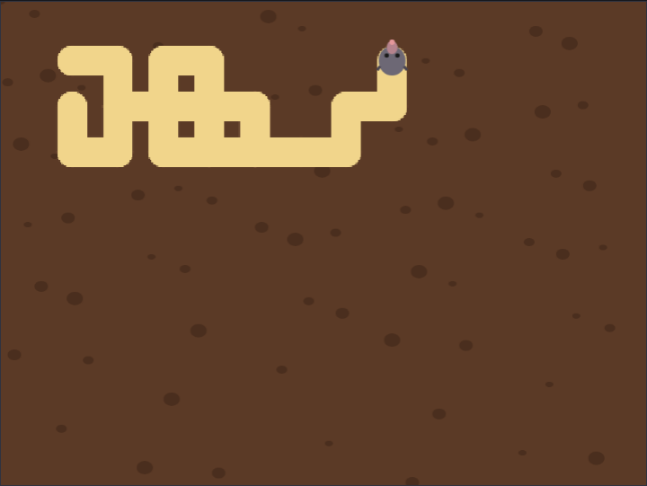
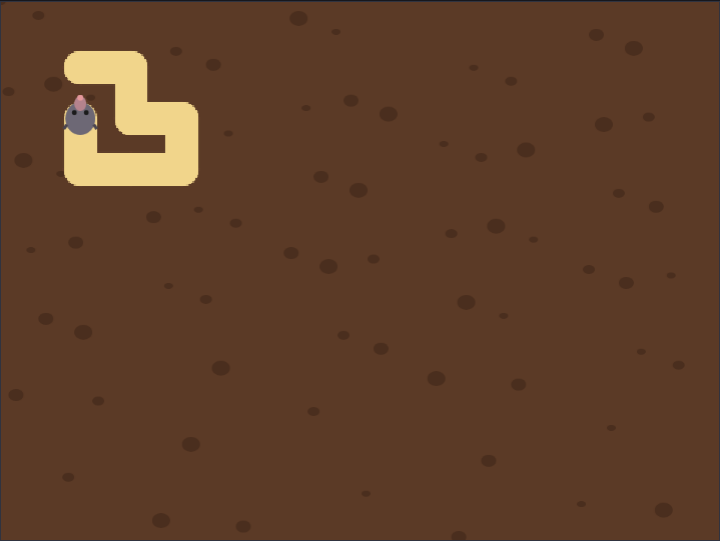
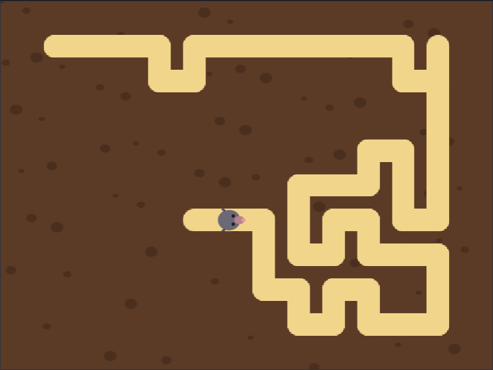

<title>Maze Maker Tutorial</title>
<meta name="claude:viewport-fit-sides" content="cover">
<link rel="preconnect" href="https://fonts.googleapis.com">
<link rel="stylesheet" href="https://fonts.googleapis.com/css2?family=Fredoka:wght@500;600&family=Atkinson+Hyperlegible:ital,wght@0,400;0,700;1,400&family=JetBrains+Mono:wght@400&display=swap">
<style>
/* Layout: one reading column; each step is a numbered section: the big idea, the blocks, a picture and a checkpoint file. */
:root {
  --bg: #f4f3fa; --surface: #ffffff; --fg: #1f1d33; --muted: #5c5a74; --line: #dddbea;
  --accent: #8a4a1c; --accent-soft: #f6e6cf; --drone: #b8580f; --code-bg: #f8f7fd;
  --display: "Fredoka", "Trebuchet MS", system-ui, sans-serif;
  --body: "Atkinson Hyperlegible", "Segoe UI", system-ui, sans-serif;
  --mono: "JetBrains Mono", ui-monospace, Consolas, monospace;
}
@media (prefers-color-scheme: dark) { :root:not([data-theme="light"]) {
  --bg: #13121f; --surface: #1c1a2c; --fg: #ebe9f7; --muted: #a6a3bf; --line: #312e47;
  --accent: #f2c27a; --accent-soft: #3a2a1c; --drone: #f2a065; --code-bg: #232036; color-scheme: dark; } }
:root[data-theme="dark"] {
  --bg: #13121f; --surface: #1c1a2c; --fg: #ebe9f7; --muted: #a6a3bf; --line: #312e47;
  --accent: #f2c27a; --accent-soft: #3a2a1c; --drone: #f2a065; --code-bg: #232036; color-scheme: dark; }

body { background: var(--bg); color: var(--fg); font: 18px/1.6 var(--body);
  padding-left: max(16px, env(safe-area-inset-left, 0px)); padding-right: max(16px, env(safe-area-inset-right, 0px)); padding-block: 40px 72px; }
main { max-width: 760px; margin: 0 auto; display: grid; gap: 48px; }
main > *, .step > *, .stack > *, .intro > * { min-width: 0; }
h1, h2, h3 { font-family: var(--display); font-weight: 600; text-wrap: balance; margin: 0; line-height: 1.15; }
h1 { font-size: clamp(2rem, 6vw, 2.9rem); }
h2 { font-size: 1.7rem; }
h3 { font-size: 1.15rem; font-weight: 500; }
p { margin: 0; max-width: 66ch; }
a { color: var(--accent); }
code { font: 0.88em var(--mono); background: var(--code-bg); padding: 1px 5px; border-radius: 4px; overflow-wrap: anywhere; }
.eyebrow { font: 600 0.78rem var(--body); letter-spacing: 0.08em; text-transform: uppercase; color: var(--drone); }
.stack { display: grid; gap: 16px; min-width: 0; }
.intro { display: grid; gap: 14px; }
.intro p { color: var(--muted); font-size: 1.08rem; }

.plan { list-style: none; margin: 0; padding: 0; display: grid; gap: 6px; counter-reset: plan; }
.plan li { display: flex; flex-wrap: wrap; align-items: baseline; gap: 4px 12px; padding: 8px 12px; border-radius: 6px; counter-increment: plan; }
.plan li::before { content: counter(plan); font: 600 0.95rem var(--display); color: var(--muted); width: 1.4em; }
.plan .name { font-weight: 700; }
.plan a { text-decoration: none; }
.plan a:hover .name, .plan a:focus-visible .name { text-decoration: underline; }
.plan .what { color: var(--muted); flex: 1 1 220px; }

.step { display: grid; gap: 20px; border-top: 2px solid var(--line); padding-top: 32px; }
.step-head { display: flex; align-items: center; gap: 14px; }
.num { flex: none; width: 44px; height: 44px; border-radius: 50%; display: grid; place-items: center;
  background: var(--accent); color: var(--surface); font: 600 1.3rem var(--display); }
ol.do { margin: 0; padding-left: 1.3em; display: grid; gap: 8px; max-width: 66ch; }

.blocks-panel { background: var(--surface); border: 1px solid var(--line); border-radius: 8px; padding: 16px; overflow-x: auto; }
.blocks-panel .label { font: 700 0.78rem var(--body); letter-spacing: 0.06em; text-transform: uppercase; color: var(--muted); margin-bottom: 8px; }
pre.blocks { margin: 0; font: 13px var(--mono); white-space: pre; }

.note { border-left: 3px solid var(--drone); padding: 2px 0 2px 14px; color: var(--fg); }
.note b { color: var(--drone); }
figure { margin: 0; display: grid; gap: 8px; }
figure img { width: 100%; border-radius: 8px; border: 1px solid var(--line); display: block; }
figcaption { font-size: 0.9rem; color: var(--muted); }

.table-wrap { overflow-x: auto; }
table { border-collapse: collapse; font-variant-numeric: tabular-nums; min-width: 420px; }
th, td { text-align: right; padding: 6px 14px; border-bottom: 1px solid var(--line); }
th:first-child, td:first-child { text-align: left; }
th { font-size: 0.82rem; color: var(--muted); font-weight: 700; }

.checkpoint { display: flex; flex-wrap: wrap; align-items: center; gap: 10px 16px; background: var(--surface);
  border: 1px solid var(--line); border-radius: 8px; padding: 12px 16px; }
.checkpoint p { flex: 1 1 260px; color: var(--muted); font-size: 0.95rem; }
.btn { display: inline-block; font-weight: 700; text-decoration: none; color: var(--surface); background: var(--accent);
  padding: 8px 16px; border-radius: 6px; white-space: nowrap; }
.btn:hover, .btn:focus-visible { outline: 3px solid var(--accent-soft); outline-offset: 1px; }
.try { margin: 0; padding-left: 1.3em; display: grid; gap: 6px; }
svg.coords text { font: 11px var(--body); fill: var(--muted); }
.scripts { display: flex; flex-wrap: wrap; gap: 12px; align-items: flex-start; }
.scripts .blocks-panel { flex: 0 1 auto; max-width: 100%; min-width: 0; }
.tag { font-size: 0.7rem; font-weight: 700; letter-spacing: 0.04em; padding: 1px 7px; border-radius: 999px; margin-left: 6px; }
.tag.new { background: var(--accent); color: var(--surface); }
.tag.changed { border: 1px solid var(--drone); color: var(--drone); }
.flow { list-style: none; margin: 0; padding: 0; display: flex; flex-wrap: wrap; gap: 8px; counter-reset: none; }
.flow li { display: grid; gap: 2px; padding: 10px 14px; border-radius: 8px; background: var(--surface); border: 1px solid var(--line);
  flex: 1 1 130px; min-width: 0; position: relative; }
.flow li b { font: 600 1.05rem var(--display); color: var(--accent); }
.flow li span { font-size: 0.85rem; color: var(--muted); }
footer { color: var(--muted); font-size: 0.92rem; border-top: 2px solid var(--line); padding-top: 24px; }
.idea { background: var(--accent-soft); border-radius: 8px; padding: 12px 16px; display: grid; gap: 4px; max-width: 66ch; }
.idea b { font: 600 1rem var(--display); color: var(--accent); }
</style>

<main>
  <header class="intro">
    <span class="eyebrow">Scratch tutorial for kids · 4 short steps</span>
    <h1>Maze Maker</h1>
    <p>A little mole digs tunnels through the soil, and when it is done, there is a maze. Every time you click the green flag, you get a new one. The trick that makes it work is a block that uses itself!</p>
    <p>You need the Scratch editor: <a href="https://scratch.mit.edu/projects/editor/">scratch.mit.edu/projects/editor</a>. Every step has a file you can download if you get stuck.</p>
  </header>

  <section class="stack" aria-label="Steps">
    <h3>The steps</h3>
    <ol class="plan">
      <li><a href="#step-1"><span class="name">Dig tunnels</span></a><span class="what">The pen draws a tunnel wherever the mole goes</span></li>
      <li><a href="#step-2"><span class="name">Look before you dig</span></a><span class="what">Don't dig into a tunnel that is already there</span></li>
      <li><a href="#step-3"><span class="name">Go back and try again</span></a><span class="what">A block that uses itself finishes the maze</span></li>
      <li><a href="#step-4"><span class="name">Instant maze</span></a><span class="what">One tick makes the whole maze appear at once</span></li>
    </ol>
  </section>

  <section class="step" id="step-1">
    <div class="step-head"><span class="num">1</span><h2>Dig tunnels</h2></div>
    <div class="idea"><b>Big idea: the pen</b><span>When the pen is down, a sprite draws a line wherever it moves. A thick, sand-coloured line looks just like a tunnel.</span></div>
    <p>Download the starter project and open it in Scratch with <b>File › Load from your computer</b>. It has the soil and the <b>Digger</b> mole. Add the <b>Pen</b> extension with the button at the bottom left.</p>
    <div class="checkpoint">
      <p>The starter project: soil and a mole, no code yet.</p>
      <a class="btn" href="https://github.com/AJosephsen/MyTemporaryJunk/raw/main/scratch/tutorials/maze-maker/starter.sb3">Download starter.sb3</a>
    </div>
    <p>Click the <b>Digger</b> and build this:</p>
    <div class="scripts">
<div class="blocks-panel"><div class="label">Digger <span class="tag new">new</span></div>
<pre class="blocks">when flag clicked
erase all
pen up
set pen size to (22)
set pen color to [#f2d58c]
go to x: (-187) y: (136)
point in direction (90)
pen down
pen up
repeat (60)
  point in direction ((pick random (0) to (3)) * (90))
  move (34) steps
  if &lt;&lt;([abs v] of (x position)) &gt; (200)&gt; or &lt;([abs v] of (y position)) &gt; (150)&gt;&gt; then
    move (-34) steps
  else
    move (-34) steps
    pen down
    move (34) steps
    pen up
  end
  wait (0.05) seconds
end</pre></div>
</div>
    <ul class="do">
      <li>The maze is a grid of squares, 34 steps wide. The mole always moves exactly one square: <b>move 34 steps</b>.</li>
      <li><b>point in direction ((pick random 0 to 3) * 90)</b> picks up (0), right (90), down (180) or left (270).</li>
      <li>The mole <b>peeks</b> first, with the pen up. If it would leave the maze, it steps back. If not, it steps back, puts the pen down and digs forward.</li>
    </ul>
    <h3>Try it</h3>
    <p>Click the green flag. The mole digs all over the place, and the tunnels run into each other. That's not a maze yet!</p>
    <figure>
      
      <figcaption>Tunnels everywhere, but no walls between them.</figcaption>
    </figure>
    <div class="checkpoint">
      <p>Stuck? This is the project at the end of step 1.</p>
      <a class="btn" href="https://github.com/AJosephsen/MyTemporaryJunk/raw/main/scratch/tutorials/maze-maker/step1.sb3">Download step1.sb3</a>
    </div>
  </section>

  <section class="step" id="step-2">
    <div class="step-head"><span class="num">2</span><h2>Look before you dig</h2></div>
    <div class="idea"><b>Big idea: the screen remembers</b><span>You don't need a list of where you have been. The tunnels are drawn on the screen, so <b>touching color</b> tells the mole if a square is already dug.</span></div>
    <p>Change one thing: the mole also steps back when it is <b>touching the sand colour</b>. To pick the colour, click the colour box in the block, then the eyedropper, then a tunnel.</p>
    <div class="scripts">
<div class="blocks-panel"><div class="label">Digger <span class="tag changed">changed</span></div>
<pre class="blocks">when flag clicked
erase all
pen up
set pen size to (22)
set pen color to [#f2d58c]
go to x: (-187) y: (136)
point in direction (90)
pen down
pen up
repeat (150)
  point in direction ((pick random (0) to (3)) * (90))
  move (34) steps
  if &lt;&lt;&lt;([abs v] of (x position)) &gt; (200)&gt; or &lt;([abs v] of (y position)) &gt; (150)&gt;&gt; or &lt;touching color [#f2d58c]?&gt;&gt; then
    move (-34) steps
  else
    move (-34) steps
    pen down
    move (34) steps
    pen up
  end
  wait (0.05) seconds
end</pre></div>
</div>
    <h3>Try it</h3>
    <p>Now the tunnel never runs into itself. But soon the mole gets stuck in a dead end, and most of the soil is never dug.</p>
    <figure>
      
      <figcaption>A real tunnel, but the mole is stuck.</figcaption>
    </figure>
    <div class="checkpoint">
      <p>Stuck? This is the project at the end of step 2.</p>
      <a class="btn" href="https://github.com/AJosephsen/MyTemporaryJunk/raw/main/scratch/tutorials/maze-maker/step2.sb3">Download step2.sb3</a>
    </div>
  </section>

  <section class="step" id="step-3">
    <div class="step-head"><span class="num">3</span><h2>Go back and try again</h2></div>
    <div class="idea"><b>Big idea: a block that uses itself</b><span>When the mole reaches a new square, it starts the same job again from there. When it is stuck, that job ends, and Scratch goes back to the square before, to try the ways it has not tried yet. Like following breadcrumbs home.</span></div>
    <p>Make your own block: <b>My Blocks › Make a Block</b>. Type <b>try</b>, then add four inputs with <b>Add an input</b>: <b>x</b>, <b>y</b>, <b>direction</b> and <b>ways left</b>. Then build its script, and change the green flag script.</p>
    <div class="scripts">
<div class="blocks-panel"><div class="label">Digger <span class="tag changed">changed</span></div>
<pre class="blocks">when flag clicked
erase all
pen up
set pen size to (22)
set pen color to [#f2d58c]
go to x: (-187) y: (136)
point in direction (90)
pen down
pen up
try (-187) (136) ((pick random (0) to (3)) * (90)) (4) :: custom
go to x: (-187) y: (136)
point in direction (90)</pre></div>
<div class="blocks-panel"><div class="label">Digger <span class="tag new">new</span></div>
<pre class="blocks">define try (x :: custom) (y :: custom) (direction :: custom) (ways left :: custom)
go to x: (x :: custom) y: (y :: custom)
point in direction (direction :: custom)
move (34) steps
if &lt;not &lt;&lt;touching color [#f2d58c]?&gt; or &lt;&lt;([abs v] of (x position)) &gt; (200)&gt; or &lt;([abs v] of (y position)) &gt; (150)&gt;&gt;&gt;&gt; then
  move (-34) steps
  pen down
  move (34) steps
  pen up
  try (x position) (y position) ((pick random (0) to (3)) * (90)) (4) :: custom
end
if &lt;(ways left :: custom) &gt; (1)&gt; then
  try (x :: custom) (y :: custom) ((direction :: custom) + (90)) ((ways left :: custom) - (1)) :: custom
end</pre></div>
</div>
    <ul class="do">
      <li><b>try</b> peeks one way from square <b>x</b>, <b>y</b>. If that square is new, it digs to it and calls <b>try</b> again from there, with 4 new ways to try.</li>
      <li>Then it tries the next way from its own square: <b>direction + 90</b>, with one way less left.</li>
      <li>Every <b>try</b> keeps its own <b>x</b> and <b>y</b>. That is how the mole finds its way back.</li>
    </ul>
    <h3>Try it</h3>
    <p>Click the green flag and watch. The mole digs, gets stuck, goes back, and digs a new branch. After about 15 seconds, every square is dug, and there is exactly one way between any two squares.</p>
    <figure>
      
      <figcaption>Halfway there. The mole will come back for the empty soil.</figcaption>
    </figure>
    <div class="checkpoint">
      <p>Stuck? This is the project at the end of step 3.</p>
      <a class="btn" href="https://github.com/AJosephsen/MyTemporaryJunk/raw/main/scratch/tutorials/maze-maker/step3.sb3">Download step3.sb3</a>
    </div>
  </section>

  <section class="step" id="step-4">
    <div class="step-head"><span class="num">4</span><h2>Instant maze</h2></div>
    <div class="idea"><b>Big idea: run without screen refresh</b><span>Normally Scratch draws the screen after each small piece of work, so you can watch. With this tick, the whole block runs before the screen is drawn again.</span></div>
    <p>Right-click the pink <b>define try</b> block, choose <b>Edit</b>, open <b>Options</b> and tick <b>Run without screen refresh</b>. That's all: the blocks look exactly the same.</p>
    <h3>Try it</h3>
    <p>Click the green flag. The maze appears at once. Click it again for a new maze!</p>
    <figure>
      
      <figcaption>A brand new maze, every time.</figcaption>
    </figure>
    <div class="checkpoint">
      <p>Stuck? This is the project at the end of step 4.</p>
      <a class="btn" href="https://github.com/AJosephsen/MyTemporaryJunk/raw/main/scratch/tutorials/maze-maker/step4.sb3">Download step4.sb3</a>
    </div>
    <h3>Try this</h3>
    <ul class="try">
      <li>Change the <b>pen size</b> to make the tunnels thinner or fatter.</li>
      <li>Start the mole in another corner. Use <b>go to x: 187 y: -136</b> and change the first <b>try</b> to match.</li>
      <li>Big challenge: add a second sprite that you walk through the maze with the arrow keys. It may only move onto sand: use <b>touching color</b> again!</li>
    </ul>
  </section>

  <footer>Made with the Scratch workbench in this repository. The blocks on this page are drawn from the real project files, so they always match the downloads.</footer>
</main>

<script src="https://cdn.jsdelivr.net/npm/scratchblocks@3.6.4/build/scratchblocks.min.js"></script>
<script>
  scratchblocks.renderMatching("pre.blocks", { style: "scratch3", languages: ["en"], scale: 0.75 });
</script>
